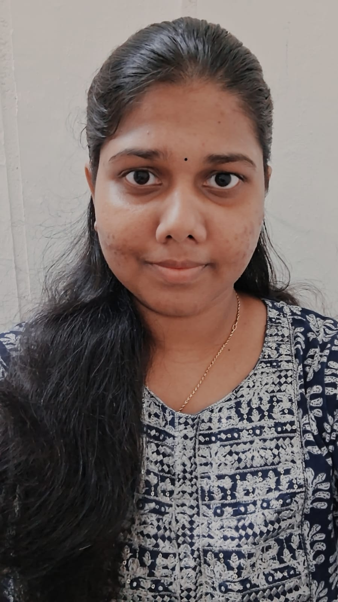

Programming
Java · C++
OPEN TO LEARNING & OPPORTUNITIES
Electronics and Communication Engineering student exploring the intersection of VLSI, embedded systems, IoT, artificial intelligence and software development. Passionate about transforming ideas into practical technology solutions.

I'm an Electronics and Communication Engineering student at R.M.K. College of Engineering and Technology, interested in turning technical concepts into practical solutions.
My interests span digital electronics, VLSI, embedded systems, IoT and software development. I enjoy exploring new technologies, collaborating on projects and continuously strengthening my engineering fundamentals.
Java · C++
Digital Electronics · VHDL
IoT · Embedded Systems
VLSI · Semiconductor Design · Software Development
VLSI · RTL DESIGN · IMAGE PROCESSING
A hardware-oriented image processing project implementing Sobel edge detection using Verilog. The design is verified through RTL simulation and supported by a Python-based image processing pipeline.
RTL simulation and image processing demonstration.
SMART INDIA HACKATHON · SOCIAL IMPACT
A unified digital scholarship platform designed to simplify scholarship discovery, eligibility checking, application tracking and access to educational opportunities for tribal students.
SMART INDIA HACKATHON · AI · SAFETY
An AI-powered underground mine safety and rescue system focused on monitoring hazardous conditions and supporting the detection of fire, smoke and people using computer vision.
View GitHub repository ↗PRODUCT DEVELOPMENT PROJECT · RMKCET
A product development project focused on IoT-based smart soil nutrient monitoring and the application of connected technology in smart agriculture.
AI WORKSHOP · HCL TECH & ET
An AI workshop project exploring Retrieval Augmented Generation (RAG) concepts through an interactive application.
View live project ↗More project details, demonstrations and technical write-ups will be added as they are ready.
Explore all my GitHub repositories ↗Anna University
BSNL
Vi Microsystems
KaaShiv InfoTech
InternPe
InternPe
I'm always interested in learning, connecting and exploring opportunities in engineering and technology. Feel free to reach out!
Get in touch ↗